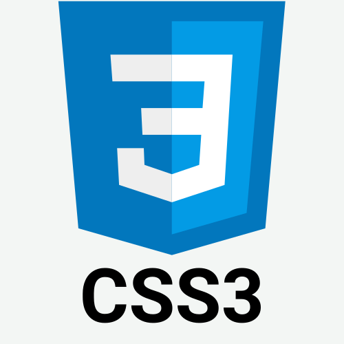

Helló, a nevem
Kiss József,
Front-end
fejlesztő vagyok!
Rólam
Üdvözöllek a Portfólió oldalamon!
Kiss József vagyok és jelenleg egy webáruházat
üzemeltetek saját vállalkozásként. Emellett az egyik legrégibb álmom
megvalósításán is dolgozom, amely a
Front-end fejlesztői karrier. Az
egész egy Commodore 64 géppel kezdődött gyerekkoromban, így mindig
is közel állt hozzám az informatika világa. Ismereteimet az
Eszterházy Károly Egyetem, illetve a Programozás Karrier által
tartott tanfolyamán szereztem.
Szakmai ismeretek

Munkáim

Kapcsolat
Ha bármilyen kérdésed van, keress bátran!